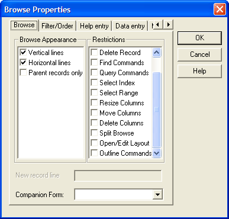

Setting User Restrictions
When creating a browse, you can set restrictions on what users can do in the browse. For example, you can allow users to enter new records, but disallow them from changing existing ones. By restricting command access, you can prevent unauthorized users from damaging data and inexperienced users from becoming confused by unnecessary choices.
Restrictions can be set in the Browse Properties window. To open the Browse Properties window:
Select Browse > Browse Properties, or click the Properties
 button on the toolbar.
button on the toolbar.The Browse Properties window appears. Restrictions are listed on the Browse tab.

Browse Properties
To apply restrictions to a browse, check the items in the Restrictions list you want to apply. Browse restrictions are valid while the browse is open.
| Restriction | Description |
| Enter Record | New records cannot be entered. |
| Change Record | Records cannot be changed. |
| Delete Record | Records cannot be deleted. |
| Find Commands | Disables Find. |
| Query Commands | Disables queries. |
| Select Index | Cannot change indexes. |
| Select Range | Cannot apply/remove ranges. |
| Resize Columns | cannot adjust column size. |
| Move Columns | Cannot reorder columns |
| Delete Columns | Columns displayed in the browse cannot be removed. |
| Split Browse | Cannot split the Browse. |
| Open/Edit Layout | User cannot open another layout or edit another layout. |
When setting restrictions for a set, the Browse Properties window offers additional options. By default the browse contains every virtual record in the set.
For example, if you have an Invoice set in which an Invoices table is linked to an Inventory Items table with a one-to-many link, a virtual record appears in the browse for each matching child record in the Inventory Items table.
For each Inventory Items record, data from the corresponding parent record repeats.
For sets which contain one-to-many links, it is sometimes helpful to use the Parent Records only restriction. This option prevents data from child records from displaying, thus there is no duplication of parent data in the browse. The fields from the child tables can still be included in the browse, but they are empty when the browse is run.
| Restriction | Description |
| Parent Records Only | Fields from child tables are not displayed. |
| Outline Commands | Can't change the outline level. |
See Also